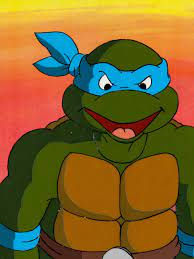

Леонардо (англ. Leonardo) или Лео (англ. Leo) — один из четырёх главных героев франшизы «Черепашки-ниндзя». Он — старший из четырёх братьев и самый искусный из них. В большинстве адаптаций Леонардо является лидером команды, а также самым зрелым и дисциплинированным из Черепах. В качестве основного оружия боя Леонардо использует парные катаны.
Как и его братья, Леонардо получил своё имя в честь итальянского художника Эпохи Возрождения, в данном случае Леонардо да Винчи. В оригинальных комиксах Mirage Studios он носил красную повязку, однако затем его отличительным цветом стал синий.